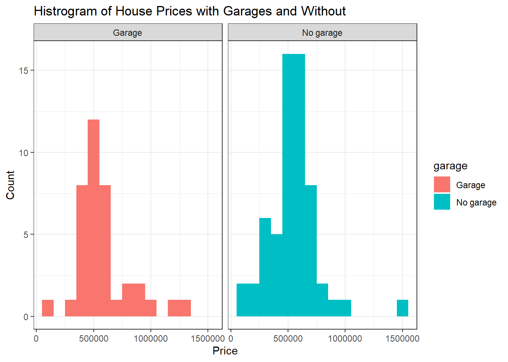
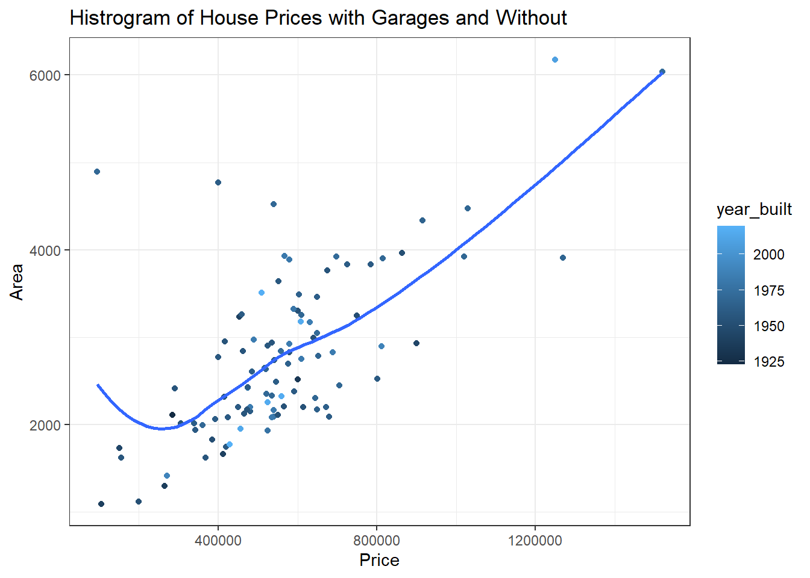

Warning: package 'tidyverse' was built under R version 4.5.2
Warning: package 'readr' was built under R version 4.5.2
Warning: package 'dplyr' was built under R version 4.5.2
Warning: package 'stringr' was built under R version 4.5.2
Warning: package 'lubridate' was built under R version 4.5.2
library(openintro)
Warning: package 'openintro' was built under R version 4.5.2
Warning: package 'airports' was built under R version 4.5.2
Warning: package 'cherryblossom' was built under R version 4.5.2
Warning: package 'usdata' was built under R version 4.5.2
Exercise 1
Suppose you’re helping some family friends who are looking to buy a house in Duke Forest. As they browse Zillow listings, they realize some houses have garages and others don’t, and they wonder: Does having a garage make a difference?
Luckily, you can help them answer this question with data visualization!
Make histograms of the prices of houses in Duke Forest based on whether they have a garage.
In order to do this, you will first need to create a new variable called garage (with levels "Garage" and "No garage").
Below is the code for creating this new variable. Here, we mutate() the duke_forest data frame to add a new variable called garage which takes the value "Garage" if the text string "Garage" is detected in the parking variable and takes the test string "No garage" if not.
duke_forest |>mutate(garage =if_else(str_detect(parking, "Garage"), "Garage", "No garage"))
Then, facet by garage and use different colors for the two facets.
Choose an appropriate binwidth and decide whether a legend is needed, and turn it off if not.
Include informative title and axis labels.
Finally, include a brief (2-3 sentence) narrative comparing the distributions of prices of Duke Forest houses that do and don’t have garages. Your narrative should touch on whether having a garage “makes a difference” in terms of the price of the house.
duke_forest |>mutate(garage =if_else(str_detect(parking, "Garage"), "Garage", "No garage")) |>ggplot(aes(x = price, fill = garage)) +geom_histogram(binwidth =100000)+facet_wrap(~garage) +theme_bw() +labs(x ="Price",y="Count",title ="Histrogram of House Prices with Garages and Without")

From the histogram we can see that having a garage and no garage appear to have very similar modes, with a majority of density being around the $500,000 bin. However, we also see that that there is more density of higher priced homes with a garage, and over double the amount above $1M. There are also a lot more homes under $500,000 available without a garage, and on average homes with garage have higher prices.
Important
Now is a good time to render, commit, and push. Make sure that you commit and push all changed documents and your Git pane is completely empty before proceeding.
Exercise 2
It’s expected that within any given marker larger houses will be priced higher. It’s also expected that the age of the house will have an effect on the price. However in some markets new houses might be more expensive while in others new construction might mean “no character” and hence be less expensive. So your family friends ask: “In Duke Forest, do houses that are bigger and more expensive tend to be newer ones than those that are smaller and cheaper?”
Once again, data visualization skills to the rescue!
Create a scatter plot to exploring the relationship between price and area, conditioning for year_built.
Use geom_smooth() with the argument se = FALSE to add a smooth curve fit to the data and color the points by year_built.
Include informative title, axis, and legend labels.
Discuss each of the following claims (1-2 sentences per claim). Your discussion should touch on specific things you observe in your plot as evidence for or against the claims.
Claim 1: Larger houses are priced higher.
Claim 2: Newer houses are priced higher.
Claim 3: Bigger and more expensive houses tend to be newer ones than smaller and cheaper ones.
duke_forest |>ggplot(aes(x = price, y = area, color = year_built)) +geom_point()+theme_bw() +geom_smooth(se =FALSE)+labs(x ="Price",y="Area",title ="Histrogram of House Prices with Garages and Without")
`geom_smooth()` using method = 'loess' and formula = 'y ~ x'
Warning: The following aesthetics were dropped during statistical transformation:
colour.
ℹ This can happen when ggplot fails to infer the correct grouping structure in
the data.
ℹ Did you forget to specify a `group` aesthetic or to convert a numerical
variable into a factor?

```
From the graph we can see that on average larger homes are associated with larger prices. We cannot see or determine if newer homes are priced higher, they is a relative mix with older homes being some of the most expensive. We also cannot determine if bigger and more expensive homes tend to be newer; newer homes appear to actuall ybe smaller on average, but there is a notable outlier with the largest home being in relativly new.
Important
Now is a good time to render, commit, and push. Make sure that you commit and push all changed documents and your Git pane is completely empty before proceeding.